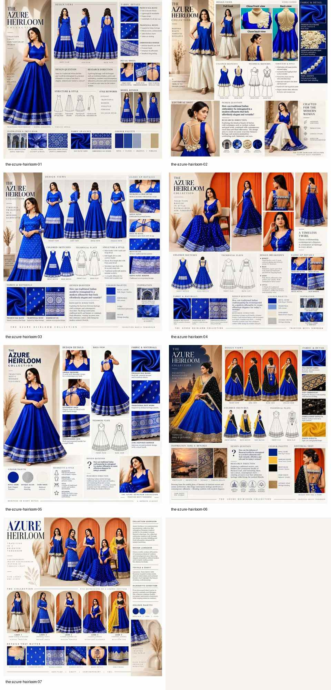
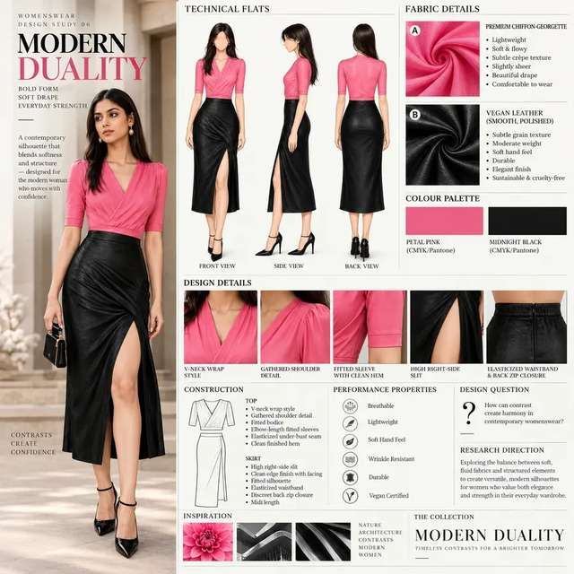
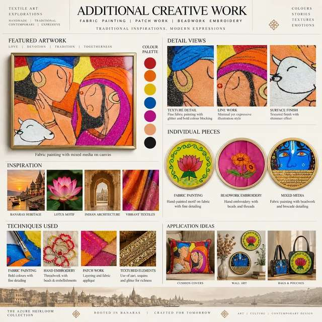
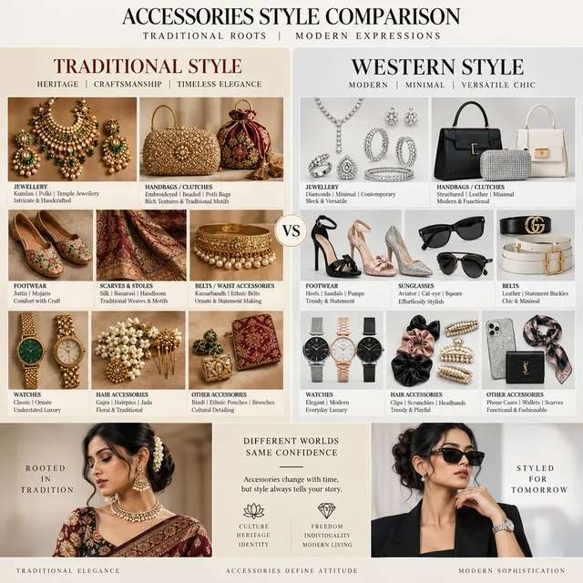
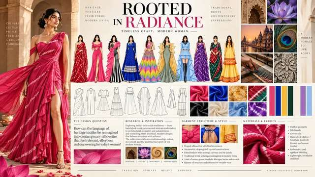
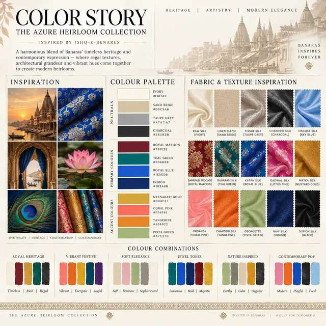
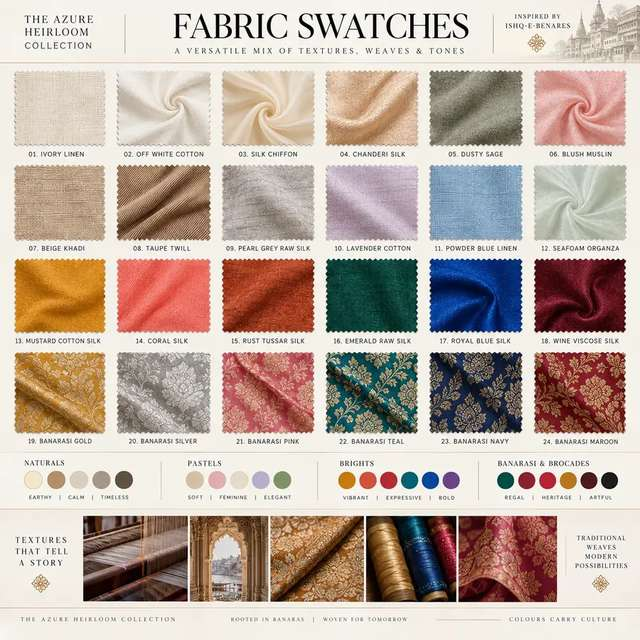

01The Azure Heirloom
Heritage, spirituality, architecture and traditional weaving translated into a blue, ivory and gold womenswear collection.
FASHION DESIGNER / TEXTILE / SURFACE
Designing through research, material experimentation and contemporary womenswear.
View selected work ↘
A DESIGN POSITION
Heritage is not a reference point. It is a material language to be translated.
Priyanka's practice moves from observation to textile, from surface to silhouette, and from research into finished womenswear.
01 — SELECTED WORK
Three focused studies across collection, silhouette and surface.

01Heritage, spirituality, architecture and traditional weaving translated into a blue, ivory and gold womenswear collection.
Seven design directions exploring draping, layering, cut-outs, gathered details, statement sleeves, fitted forms and fluid movement.
Explore the series ↗Diagonal stripe, horizontal shibori, curved-line and diamond shibori directions developed as pattern, texture and garment possibility.
See material studies ↗04 — CREATIVE ARCHIVE
Craft, styling, accessories and visual research.





ABOUT / 02
Priyanka Vishwakarma is a fashion design fresher based in Chhattisgarh, India, with a Professional Fashion Designing diploma and a Diploma in Handloom and Textile Technology.
Her practice spans womenswear, textile and surface development, fashion styling, colour selection, research, illustration and craft-led experimentation.
03 — PROCESS
The portfolio becomes a visible record of how ideas move.
Collect references, identify tensions, frame a question.

Test colour, hand feel, textile behaviour and surface.
Manipulate, repeat, reject and refine visual language.

Carry the research into silhouette, detail and final look.
Research should be visible.
That is where authorship lives.